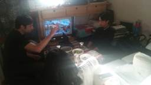
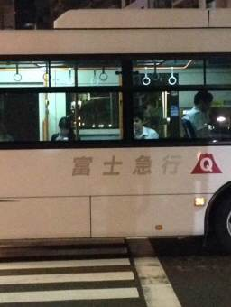
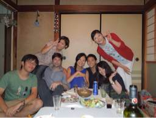
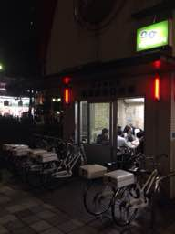

PARTICIPANTS:
DB ID: 0
Current name: You
Address book name: You
User name:
Phone Number:
Key:
DB ID: 561
Current name: 富士奈 fujina
Address book name: Fujina Oyagi
User name: fujina oyagi
Phone Number: 09067001543
Key: 090 6700 1543
Messages:
2014/05/31 15:54:53, "0:You":
Hi
2014/05/31 21:29:00, "561:富士奈 fujina":
hi, I have fun time today!
Please take a rest today.
2014/05/31 21:45:18, "561:富士奈 fujina":
明日6時空いてますか？
2014/05/31 21:47:28, "0:You":
Thank you, was a good one.
うん！6 時(null)
西荻窪でしたっけ？
2014/05/31 21:57:38, "561:富士奈 fujina":
Yes! We'll go to 西荻窪！
楽しみ！早く会いたい‼︎
2014/05/31 23:08:21, "0:You":
私も会いたいです
おやすみ！
2014/05/31 23:12:03, "561:富士奈 fujina":
おやすみなさい。6時に西荻窪駅で待ち合わせましょう！
2014/05/31 23:12:30, "0:You":
(null)
またあしたね
2014/05/31 23:12:32, "561:富士奈 fujina":
いい夢を♡
2014/06/01 16:55:56, "0:You":
今西荻窪のマックでガタガタしてるよ。
ごゆっくりどうぞ
2014/06/01 16:57:44, "0:You":
http://s.tabelog.com/tokyo/A1319/A131907/13032579/
2014/06/01 17:05:22, "561:富士奈 fujina":
もういるんだ！今から向かうよ^ ^
2014/06/01 17:05:53, "0:You":
オー！ありがと
2014/06/01 17:55:14, "561:富士奈 fujina":
着いたよ！マックむかうね！
2014/06/01 18:00:31, "0:You":
外で待ってる
2014/06/01 22:57:22, "0:You":
ありがとう。
自転車を急がないで、ゆっくり来てて。
2014/06/01 23:15:22, "0:You":
You sent a photo.
2014/06/01 23:15:26, "0:You":
着いたから大丈夫よ。
2014/06/01 23:27:09, "561:富士奈 fujina":
ついた！ローソン迎えにいくね！
2014/06/01 23:27:31, "0:You":
了解です
2014/06/01 23:27:38, "0:You":
ありがとう
2014/06/02 10:36:23, "0:You":
今日はありがとうございました
本当によかったです
2014/06/02 11:17:25, "561:富士奈 fujina":
toniありがとう！とっても幸せな時間でしたね。
きれいな所、楽しいことたくさんshareしたいね！
2014/06/02 23:25:04, "0:You":
ふちゃん！おやすみ
また会いたい、早く
2014/06/03 06:32:17, "561:富士奈 fujina":
おはよう✨
Toniお疲れさま。
私もすごく会いたい…！
I'm going back to my parent's house at one night from today.
今日もtoniにとっていい日になりますように。
2014/06/03 07:36:18, "0:You":
おはよう！
2014/06/03 08:20:24, "561:富士奈 fujina":
http://www.foret-aventure.jp/park/index.html?no_redirect=true
神奈川でもあった！
2014/06/03 08:22:02, "0:You":
すげ〜！
ありがと！
2014/06/03 08:24:27, "561:富士奈 fujina":
8人以上だと団体で少しだけ安くなる ！面白そうっ！
2014/06/03 08:29:44, "0:You":
うん！
話して細かいところを決めましょう
またいつ会える？
2014/06/03 08:37:34, "561:富士奈 fujina":
5か6日の夜は空いてます。あと8日は会えるね^ ^
2014/06/03 08:41:17, "0:You":
5日、恵比寿でディナー？
http://s.tabelog.com/tokyo/A1303/A130302/13009298/
2014/06/03 08:45:51, "561:富士奈 fujina":
わー♡ステキ♡
行きたいです！
2014/06/03 08:46:07, "0:You":
None
2014/06/03 08:54:28, "561:富士奈 fujina":
2014/06/04 15:02:03, "561:富士奈 fujina":
Fujina Oyagi sent you a photo.

2014/06/04 15:08:12, "0:You":
うらやましい
2014/06/04 17:35:53, "561:富士奈 fujina":
お母さんとwalking！
一緒に行きたい。
2014/06/04 17:50:48, "0:You":
今日は8時恵比寿駅でいい？
2014/06/04 17:51:29, "561:富士奈 fujina":
明日だよね？
2014/06/04 17:52:16, "0:You":
そうか、そうか？！
明日！ごめん！
2014/06/04 17:55:11, "561:富士奈 fujina":
ううん、謝らないで。
今日も会いたかった！
2014/06/04 22:26:09, "561:富士奈 fujina":
明日8時に恵比寿行くね！
2014/06/04 23:22:28, "0:You":
了解です
また明日！
2014/06/04 23:26:34, "561:富士奈 fujina":
はい！
2014/06/05 08:50:14, "0:You":
ふちゃん、おはよう！
よく眠れた？
またあとだね！
2014/06/05 09:17:23, "561:富士奈 fujina":
おはよう❗️うん、たくさん休めたよ。
朝から庭のそうじしてました。
またあとで💕
2014/06/05 09:18:29, "0:You":
いい庭をしてるんですね〜
2014/06/05 09:26:09, "561:富士奈 fujina":
全然終わらない…
少しづつ進める。。
2014/06/05 09:27:34, "0:You":
手伝いますよ〜
二人だったら楽しそう
トマトをやりたいし
2014/06/05 09:53:43, "561:富士奈 fujina":
やった〜♥️美味しいトマト楽しみだね♥️
2014/06/05 20:27:33, "0:You":
Hortensia
2014/06/06 10:07:51, "561:富士奈 fujina":
無事に、駅につけた？雨強いから気をつけてね。
2014/06/06 11:00:59, "0:You":
ありがとう
今日は最高だった
2014/06/06 11:15:28, "561:富士奈 fujina":
ほんっと〜に美味しかった！！あなたといると幸せすぎます。
2014/06/07 13:40:36, "561:富士奈 fujina":
おはよ！明日は12時に大泉学園駅に集合だよ。
2014/06/07 16:38:54, "0:You":
None
2014/06/07 18:06:34, "0:You":
朝早く来ていい？
2014/06/07 18:11:54, "561:富士奈 fujina":
来てくれるの？ありがとう^o^♥️
2014/06/07 18:17:18, "0:You":
うん！またね！
2014/06/07 18:18:52, "561:富士奈 fujina":
何時頃？
2014/06/07 18:19:45, "0:You":
9時〜
準備を手伝います
2014/06/07 18:30:36, "561:富士奈 fujina":
わー！ありがとう！
今日ほとんど準備したけど、明日もあるんだ！
友達とか呼んでもいいよ！
2014/06/07 21:30:25, "0:You":
おやすみ！
2014/06/07 22:04:28, "0:You":
今日たくさん準備してくれてありがとう！
あした楽しみにしてるよ！
2014/06/07 22:06:17, "561:富士奈 fujina":
いえいえ！ちょっと失敗しちゃったけど。。
私も楽しみ！
おやすみなさい！
2014/06/07 22:07:45, "0:You":
Good night,babe!
2014/06/07 22:11:25, "561:富士奈 fujina":
2014/06/08 08:47:35, "0:You":
09:46に大泉学園に着きます
--- from 駅すぱあと ---
2014/06/08 08:49:57, "561:富士奈 fujina":
はーい！分かりました。
お家までこれる？お迎え行こうか？
2014/06/08 08:51:38, "0:You":
一人で行けます
何を買って来たらいいの？
2014/06/08 08:52:50, "561:富士奈 fujina":
はーい！何も大丈夫だよ！
2014/06/08 09:58:19, "0:You":
駅に着いた
ちょっと迷ってる
住所を送ってくれる？
2014/06/08 09:58:58, "561:富士奈 fujina":
あー、ごめんね！
2014/06/08 09:59:12, "561:富士奈 fujina":
東京都練馬区石神井台3-38-8
2014/06/08 09:59:22, "561:富士奈 fujina":
改札でて左だよ！
2014/06/08 09:59:47, "0:You":
助かりました
ありがとう
2014/06/08 10:00:23, "561:富士奈 fujina":
気を付けてね。
2014/06/09 10:14:55, "561:富士奈 fujina":
Nos vemos!
2014/06/09 10:16:44, "0:You":
うん！
nos vemos!
2014/06/10 09:15:05, "561:富士奈 fujina":
おはよ！
http://gotrip.jp/2014/04/2522/
ここ京都だって！すごくない〜？
2014/06/10 09:16:33, "0:You":
おはようふじなちゃん
その京都をみたことないです
すごいきれい
2014/06/10 09:24:30, "561:富士奈 fujina":
ねー！宿からfishingが出来るって。
京都、海ってイメージなかった。
2014/06/10 09:29:46, "561:富士奈 fujina":
明日とかもし来れたらうちに来てね…。
2014/06/10 13:51:40, "0:You":
今週はゲーム業界の飲み会や勉強会がいっぱいです。
週末に来ていい？
2014/06/10 13:55:32, "561:富士奈 fujina":
はい。土曜あいてる？
2014/06/10 14:14:37, "0:You":
うん！土曜日に来ていい？
2014/06/10 14:24:16, "561:富士奈 fujina":
うん。もしよかったら土曜日の夜20時になおこにちょっと会ってほしいの。
クラフトビール屋さんで。
2014/06/10 14:41:41, "0:You":
いいね！是非
2014/06/10 14:46:32, "561:富士奈 fujina":
こないだ来れなかったから、ありがとう！
2014/06/12 08:20:25, "561:富士奈 fujina":
Fujina Oyagi sent you a photo.

2014/06/12 08:23:39, "0:You":
おはよう
いい写真だね。
また早く会いたい
2014/06/12 08:32:22, "561:富士奈 fujina":
みさきちゃんがくれたよ。
お気に入り！
うん。明後日会えるね
2014/06/12 08:34:26, "0:You":
そうそう！
待てられないね！
2014/06/12 08:49:00, "561:富士奈 fujina":
うん、頑張って待つ！
2014/06/12 11:42:49, "0:You":
ふじな！！
2014/06/12 12:03:31, "561:富士奈 fujina":
え、どうしたの？！？
2014/06/12 12:13:09, "0:You":
呼んでみたかた
なんでもないよ
2014/06/12 12:37:45, "561:富士奈 fujina":
私もよくやる😂
トニー!!
2014/06/12 12:42:05, "0:You":
は〜〜い！
2014/06/12 12:42:32, "0:You":
w
2014/06/12 13:08:18, "0:You":
なにをやってるの？
2014/06/12 13:09:20, "561:富士奈 fujina":
w も使えるんだね！！
2014/06/12 13:11:48, "561:富士奈 fujina":
朝はYOGA、今家でランチ！
日曜日から、かりんが住むから、お掃除するよ❗️
2014/06/12 13:11:54, "561:富士奈 fujina":
トニー忙しい？
2014/06/12 13:13:42, "0:You":
今会社、普通に忙しい
2014/06/12 13:14:20, "561:富士奈 fujina":
邪魔してごめん。w
2014/06/12 13:14:40, "0:You":
いつでも邪魔をしてください
2014/06/12 13:19:00, "561:富士奈 fujina":
お言葉に甘えます。😸
2014/06/12 13:32:58, "0:You":
土曜日は一日一緒にいます。日曜昼までです。
BBQへ行かなきゃいけないから。
2014/06/12 14:30:35, "561:富士奈 fujina":
はい。嬉しい！
私も日曜は朝から用事があるの。ギャラリーへ行かないといけない。
2014/06/12 14:39:12, "0:You":
いいね！
2014/06/12 19:11:05, "561:富士奈 fujina":
土曜日は何処かに行く？
のんびり？
2014/06/12 19:11:55, "0:You":
どちでもいいよ
2014/06/12 19:14:20, "561:富士奈 fujina":
土曜日、晴れそうだね！
どうしようかな。
井の頭公園もいいね、
考えとく
2014/06/12 19:15:09, "0:You":
オー！いいですね〜
井の頭公園って〜
2014/06/12 19:18:39, "561:富士奈 fujina":
吉祥寺行って井の頭公園でコーヒー！お散歩！
そのあと夜は西荻でなおことビール少し。
どうでしょう？
2014/06/12 19:28:25, "0:You":
None
2014/06/12 19:32:44, "561:富士奈 fujina":
2014/06/13 09:25:42, "0:You":
おはよう！
よく寝た？
2014/06/13 09:27:57, "561:富士奈 fujina":
おはよう ！23時には寝ちゃった！
トニもよく寝れた？
2014/06/13 09:28:46, "0:You":
うん！寝た、寝た！
またあしたね！
2014/06/13 09:29:33, "561:富士奈 fujina":
はい。時間はお昼ごろ？
2014/06/13 09:30:56, "0:You":
そうだね〜
NTTの人は9~12時に来るから。
2014/06/13 09:32:30, "561:富士奈 fujina":
そうかぁ！ゆかりちゃん帰ったの？ 終わってからだね。
2014/06/13 09:34:58, "0:You":
ゆっくりちゃんは今日の昼自家に帰るよ。
今週ゆっくりちゃんはずっと吐いてゲリして大変だった。
やっと終わった
2014/06/13 09:35:10, "0:You":
ゆかりちゃん
2014/06/13 09:38:43, "561:富士奈 fujina":
ゆっくりちゃんw
体調悪かったんだね。看病大変だったねー💧
嵐が去ったね、お疲れ様‼︎
2014/06/14 11:20:35, "0:You":
12:04に大泉学園に着きます
--- from 駅すぱあと ---
2014/06/14 11:22:14, "561:富士奈 fujina":
大泉くるのね！わかった！
2014/06/14 22:26:25, "0:You":
ごめん！
ショックで何も分かってないです。
考えてからまた連絡をする
2014/06/14 23:14:02, "0:You":
困ったな〜
やっぱり、分からないから帰ったら電話をしてて
2014/06/14 23:43:41, "561:富士奈 fujina":
2014/06/14 23:44:27, "561:富士奈 fujina":
2014/06/14 23:44:38, "561:富士奈 fujina":
2014/06/14 23:45:16, "0:You":
Call History : 26000 millisecs, Result: 16
(Binary)
2014/06/15 00:03:36, "561:富士奈 fujina":
2014/06/15 00:07:08, "0:You":
電話をありがとう
安心して、ふじなが好きだから。
2014/06/15 00:09:38, "0:You":
人前でイチャイチャをしないでおきます。
自分がKYでした。
2014/06/15 00:13:31, "561:富士奈 fujina":
いや。そんな、してなかったよ？
2014/06/15 00:13:54, "561:富士奈 fujina":
なおこと相談する。
2014/06/15 00:14:16, "561:富士奈 fujina":
トニに悪い気持ちさしてごめん
2014/06/15 00:15:11, "0:You":
気にしないでよ！
私も悪いなの
2014/06/15 00:16:55, "0:You":
ふじなとの関係が一時的の愛か本当の愛かを分かるため時間を立たせた。
2014/06/15 00:19:20, "0:You":
待たせすぎ。
それで前彼女と別れるのが、私が遅い。
2014/06/15 00:26:14, "561:富士奈 fujina":
わかった、、さ
2014/06/15 00:26:36, "561:富士奈 fujina":
時間が必要なんだね。
2014/06/15 00:26:58, "561:富士奈 fujina":
ただ気持ち悪かっただけ。
2014/06/15 00:27:46, "0:You":
ごめん
ホントにごめんね
2014/06/15 00:28:19, "561:富士奈 fujina":
いいえ、トニにの言葉、それだけを信じてる。
2014/06/15 01:46:15, "561:富士奈 fujina":
2014/06/15 02:05:28, "561:富士奈 fujina":
それだせを、しんじてるよ。
2014/06/15 02:06:10, "561:富士奈 fujina":
それだけ信じてる。
2014/06/15 02:06:14, "0:You":
信じてくれてありがとう
2014/06/15 02:06:30, "0:You":
も帰った？
2014/06/15 02:06:50, "561:富士奈 fujina":
トニの言葉だけ、、
2014/06/15 02:07:44, "561:富士奈 fujina":
どうでしょう
2014/06/15 02:08:55, "561:富士奈 fujina":
トニの気持ちは、わかったよ。
2014/06/15 02:09:12, "0:You":
先の電話でGiuseppeの声が聞こえたから
違う店にいるよね
2014/06/15 02:09:29, "561:富士奈 fujina":
悲しい
2014/06/15 02:09:47, "0:You":
悲しまないで
2014/06/15 02:10:18, "561:富士奈 fujina":
そっか。、
2014/06/15 02:10:29, "0:You":
違う店にいるの？
2014/06/15 02:10:57, "561:富士奈 fujina":
yes!
2014/06/15 02:11:35, "0:You":
そうかそうか？！
Giuseppeによろしく、ね！
2014/06/15 02:13:12, "561:富士奈 fujina":
トニはすごく、近くに感じたのに…
2014/06/15 02:13:40, "561:富士奈 fujina":
難しいんだね。
2014/06/15 02:14:11, "0:You":
うん！私もふじながすごい好きです
2014/06/15 02:16:00, "561:富士奈 fujina":
それは、どうなの？、、
2014/06/15 02:18:35, "0:You":
ここで説明し辛い
また会って話そう
2014/06/15 02:19:27, "561:富士奈 fujina":
わかったむずかしいね
2014/06/15 02:27:06, "561:富士奈 fujina":
誰の話を聞いても私はトニの話しを信じます。
2014/06/15 02:52:49, "561:富士奈 fujina":
帰ります。
2014/06/15 03:40:38, "561:富士奈 fujina":
2014/06/15 03:52:29, "561:富士奈 fujina":
ごめん。ちょー酔ってる。反省中
2014/06/15 05:11:22, "0:You":
Call History : 4704000 millisecs, Result: 16
(Binary)
2014/06/15 05:12:43, "0:You":
途中で寝ちゃいましてごめんね
ふじなちゃん好きなんです
2014/06/15 05:13:37, "561:富士奈 fujina":
遅くまでごめんね。
というか、すべて謝るね。
ごめん？
2014/06/15 05:13:46, "561:富士奈 fujina":
ごめん。
2014/06/15 17:18:57, "0:You":
私の友達に聞いてみた。
次のファション関係のイベントを呼んでくれるって。
なおこちゃんも連れて行こう
2014/06/15 22:00:09, "561:富士奈 fujina":
ありがとう！
予定が合うといいね。あと、ゆかりも興味あると思う！
2014/06/15 22:00:32, "0:You":
2014/06/15 22:53:03, "561:富士奈 fujina":
今日晴れて良かったね。
2014/06/16 09:26:58, "0:You":
おはよう！
2014/06/16 09:31:13, "561:富士奈 fujina":
うん。おはよう
2014/06/16 23:29:54, "0:You":
今日はふじなを思い出した
2014/06/16 23:30:01, "0:You":
You sent a photo.
2014/06/16 23:42:16, "561:富士奈 fujina":
有名なんだよ。私って…
2014/06/16 23:48:04, "561:富士奈 fujina":
Fujina Oyagi sent you a photo.
2014/06/16 23:52:54, "0:You":
また干してるね。
2014/06/16 23:58:02, "561:富士奈 fujina":
別れが寂しいからね。
2014/06/17 09:27:19, "0:You":
そうか、そうか〜
2014/06/17 09:41:14, "561:富士奈 fujina":
おはよ！！
2014/06/17 09:41:54, "0:You":
よく寝た？
新しいルームメイトは着いた？
2014/06/17 09:41:58, "561:富士奈 fujina":
Fujina Oyagi sent you a photo.
2014/06/17 09:42:04, "561:富士奈 fujina":
うさこちゃん！
2014/06/17 09:42:26, "561:富士奈 fujina":
かりんちゃんのおばあちゃんが倒れて延期になったの…
2014/06/17 09:43:20, "0:You":
困ったな
2014/06/17 09:44:03, "561:富士奈 fujina":
困った？
2014/06/17 09:44:30, "0:You":
おばあちゃんがかわいそう
2014/06/17 09:45:05, "0:You":
最近、僕たちがいろいろあって落ちつかない
2014/06/17 09:55:42, "561:富士奈 fujina":
そうなの。かりんちゃんかわいそう…
2014/06/17 09:58:30, "561:富士奈 fujina":
うん。トニが考えて落ち着いたら、話せたら嬉しいよ。
2014/06/17 10:15:34, "0:You":
うん！そうしましょ！
2014/06/17 10:33:53, "561:富士奈 fujina":
うん。
あ！28日welcome partyなくなったの。
Yukoが夕方16時からBBQやるから、それに行くか悩んでるよ。
トニももしよかったら。
2014/06/17 10:34:45, "0:You":
カレンダーをみてみます
2014/06/17 17:10:36, "561:富士奈 fujina":
はい！
トニ、All is well !
2014/06/17 17:10:56, "0:You":
ふじな！！
2014/06/17 17:51:03, "561:富士奈 fujina":
トニ！
2014/06/18 08:15:54, "0:You":
おはよう！
今夜暇？大井町で泊まる？
2014/06/18 08:52:36, "561:富士奈 fujina":
おはよう！
20時半以降なら空いてるけど、お話だけなら会えます。
2014/06/18 09:01:03, "0:You":
悩みがいっぱいで
深い話しには出来ない
マジごめん、今の時期は頭が回りすぎ。
2014/06/18 09:04:18, "561:富士奈 fujina":
そしたら時間を置いた方がいいと思う。
ゆっくり整理した方がいい様な気がするよ？
トニはどうしたい？
2014/06/18 09:08:07, "561:富士奈 fujina":
会いたかったら会いに行くよ。
2014/06/18 09:11:26, "0:You":
ふじなの顔がみたい。
やっぱり、会いたい。
2014/06/18 09:23:51, "561:富士奈 fujina":
わかった。今日10時過ぎとかに大井町つけるかも！
会いに行くね
2014/06/18 09:23:58, "561:富士奈 fujina":
2014/06/18 09:24:19, "0:You":
ありがとう
向かいに来ます
2014/06/18 09:24:41, "561:富士奈 fujina":
また電車乗ったら連絡するね！
2014/06/18 09:38:03, "0:You":
了解です
2014/06/18 09:38:53, "0:You":
今日２２時〜ですか？
2014/06/18 09:39:51, "561:富士奈 fujina":
だいたいその時間！
2014/06/18 09:40:14, "0:You":
おけー！
2014/06/18 19:09:35, "561:富士奈 fujina":
21:30くらいかも。
2014/06/18 19:10:25, "0:You":
イーエイ！
もっと早く来てていいよ
2014/06/18 19:11:47, "561:富士奈 fujina":
もっとはやいかも！また連絡する。
2014/06/18 21:03:41, "0:You":
ふじな！
2014/06/18 21:04:49, "561:富士奈 fujina":
21:33に大井町つきます！
2014/06/18 21:05:53, "0:You":
了解です。
向かいます。
2014/06/18 21:06:08, "561:富士奈 fujina":
ありがとう❗️
2014/06/18 21:06:34, "0:You":
ありがtwenty
2014/06/18 21:08:54, "561:富士奈 fujina":
🐜🐜🐜🐜🐜🐜🐜🐜🐜🐜🐜🐜🐜🐜🐜🐜🐜🐜🐜🐜
2014/06/18 21:09:17, "0:You":
W
2014/06/18 21:29:45, "0:You":
中央出口アトレ側
2014/06/19 10:52:45, "0:You":
今日はありがとう！
とても楽しかった
2014/06/19 10:56:42, "561:富士奈 fujina":
私も！
またあとで会えるね。
2014/06/19 18:44:41, "0:You":
2014/06/19 18:45:06, "0:You":
仕事終わった
今から大井町に向かう
2014/06/19 18:45:58, "561:富士奈 fujina":
はやかったね！お疲れさま。！！出る時連絡する〜
2014/06/19 19:28:35, "0:You":
19:50に大井町に着きます
--- from 駅すぱあと ---
2014/06/19 19:30:48, "0:You":
駅前でコーヒーを飲んで待ってるよ
2014/06/19 19:38:33, "561:富士奈 fujina":
わたし、20:30まえかもよ？
2014/06/19 19:51:50, "0:You":
2014/06/19 20:09:05, "561:富士奈 fujina":
トニ、ごめんもたもたしてた！50分くらいになっちゃうから先にお家戻ってて！
私、わりと覚えてる！
2014/06/19 20:10:20, "0:You":
大丈夫だよ
向かいに行くよ
2014/06/19 20:11:05, "561:富士奈 fujina":
ううん。悪いから、それかローソンまでは確実にいける❗️
2014/06/19 20:13:26, "561:富士奈 fujina":
また連絡するね！
2014/06/19 20:14:44, "0:You":
駅のバーガーキングにいるよ
2014/06/19 20:17:35, "561:富士奈 fujina":
ごめんんん。。。。！
2014/06/19 20:19:02, "561:富士奈 fujina":
2014/06/19 20:56:09, "561:富士奈 fujina":
バーガーキングむかいます！ごめんね！
2014/06/19 21:01:12, "0:You":
今どこ？
2014/06/19 21:01:27, "0:You":
改札口へ行くよ
2014/06/19 21:02:06, "561:富士奈 fujina":
りんかい線の改札でて外にでたところ！
2014/06/19 21:03:21, "0:You":
2014/06/20 09:51:06, "561:富士奈 fujina":
幸せづくし ありがとう。
2014/06/20 09:53:32, "0:You":
こちらこそありがとう！
2014/06/20 11:48:31, "561:富士奈 fujina":
Fujina Oyagi sent you a photo.
2014/06/20 11:48:39, "561:富士奈 fujina":
わ〜❗️
2014/06/20 11:49:30, "0:You":
見つけた、ね！
2014/06/20 11:50:19, "561:富士奈 fujina":
ミニチョコシナボン食べちゃった！
2014/06/20 11:50:35, "0:You":
甘いでしょ？！
2014/06/20 11:50:49, "561:富士奈 fujina":
美味し〜！！
2014/06/21 23:49:21, "561:富士奈 fujina":
げんき？おやすみなさい。
2014/06/22 08:55:49, "0:You":
元気だよ！
おはよう、ふじな！
2014/06/22 09:10:35, "561:富士奈 fujina":
よかった！
おはよう、トニー。
2014/06/23 09:05:20, "0:You":
ふじな！
good morning
2014/06/23 10:37:41, "561:富士奈 fujina":
Good morning !
いい週末だった？
2014/06/23 10:38:29, "0:You":
うん！よかった！
また会いたくなちゃった
2014/06/23 10:44:35, "561:富士奈 fujina":
うん！いつも会いたいと思ってるよ。
2014/06/23 10:48:27, "0:You":
大井町に遊びに来る？
2014/06/23 10:54:43, "561:富士奈 fujina":
火〜木まで実家に戻るから会えないです。
今日か金〜なら大丈夫だよ！
2014/06/23 10:57:07, "0:You":
今日がいい
2014/06/23 11:01:46, "0:You":
今日２０：３０に帰るから。
大井町と大泉学園とどっちがいい？
2014/06/23 11:06:59, "561:富士奈 fujina":
はい。どちらでもいいよ✌️
2014/06/23 11:09:03, "0:You":
朝ジムへ行きたいから大井町でいい？
2014/06/23 11:11:03, "561:富士奈 fujina":
Good for u!
わかった！21:30くらいに大井町かな？
2014/06/23 11:11:29, "0:You":
tnx!
2014/06/23 11:17:25, "561:富士奈 fujina":
😸
2014/06/23 20:06:20, "0:You":
夜ご飯はどうする？食べた？
2014/06/23 20:09:26, "561:富士奈 fujina":
ちょっと食べた！食べてないよね？なんか買っておく？
2014/06/23 20:10:16, "0:You":
会ってから考えよう
2014/06/23 20:10:30, "561:富士奈 fujina":
はーい！
2014/06/23 20:11:12, "0:You":
後ちょっとで会社から出れる
2014/06/23 20:11:15, "561:富士奈 fujina":
ちょっと早めにつくかもです。
2014/06/23 20:11:36, "0:You":
OK
2014/06/23 20:31:28, "0:You":
21:04に大井町に着きます
--- from 駅すぱあと ---
2014/06/23 20:39:14, "561:富士奈 fujina":
同じ電車かも。
2014/06/23 20:42:41, "0:You":
マジか？！
りんかい線だけど
4号車
2014/06/23 20:46:45, "561:富士奈 fujina":
マジだ〜
私7号車だった！行けたら行くね〜！
2014/06/23 20:47:16, "0:You":
新宿でね
2014/06/23 20:50:15, "561:富士奈 fujina":
移動してる？
2014/06/23 20:50:52, "0:You":
してみた
けど今4号車に戻った
2014/06/23 20:52:50, "561:富士奈 fujina":
後で行くね❗️
2014/06/23 20:53:57, "0:You":
待ってるよ
2014/06/24 11:56:45, "561:富士奈 fujina":
今日も幸せ！遅れちゃってごめんね。次はアラームかけよう！
2014/06/24 12:08:20, "0:You":
オー！とてもよかった
ほとんど寝てたけど、ね！
２人とも疲れがたまってた
2014/06/24 18:53:20, "561:富士奈 fujina":
たくさん寝てたね！！
トニー疲れてるから体調気をつけてね！
2014/06/24 18:59:45, "561:富士奈 fujina":
2014/06/25 22:29:01, "561:富士奈 fujina":
Fujina Oyagi sent you a photo.
2014/06/25 22:29:35, "0:You":
なごや？
2014/06/25 22:30:10, "561:富士奈 fujina":
長野！親戚のお家！
2014/06/25 22:31:44, "0:You":
なるほど‼︎
2014/06/25 22:34:06, "561:富士奈 fujina":
トニも行こう♡
2014/06/25 22:34:19, "561:富士奈 fujina":
空気が美味しいよ！
2014/06/25 22:34:37, "0:You":
行こう、行こう！
2014/06/25 22:36:01, "561:富士奈 fujina":
うん！是非おいでって言われたよ！行こう！
2014/06/25 22:59:31, "561:富士奈 fujina":
ビール買ったよ！飲もうね^ ^
2014/06/25 23:00:30, "0:You":
うん！飲もう
2014/06/25 23:15:30, "561:富士奈 fujina":
うん、おやすみなさい！
2014/06/25 23:20:27, "0:You":
Good night babe
2014/06/27 17:37:58, "561:富士奈 fujina":
忙しいだろうね？
明日も雨みたいだよ！！
2014/06/27 17:38:21, "0:You":
そうだね
2014/06/27 17:39:35, "561:富士奈 fujina":
邪魔してゴメン〜！
2014/06/27 17:40:45, "0:You":
なんでもないよ〜
明日会うのを楽しみにしてます
2014/06/27 17:44:06, "561:富士奈 fujina":
うん！明日楽しみ！！
トニーが行くことをyukoには伝えてます。reiも来るみたいだよ！
2014/06/27 17:44:51, "0:You":
いいね！
2014/06/27 17:54:20, "561:富士奈 fujina":
2014/06/28 15:26:19, "0:You":
15:41に二子玉川に着きます
--- from 駅すぱあと ---
2014/06/28 15:27:24, "561:富士奈 fujina":
45分にゆかりとたかちゃんと待ち合わせてるから一緒に行こう！
2014/06/28 15:29:15, "0:You":
2014/06/30 20:16:37, "561:富士奈 fujina":
How's it going? 土曜日はお疲れ様!！
2014/06/30 20:34:46, "0:You":
hi!
still at work
very bussy today
2014/06/30 20:43:18, "0:You":
連絡をとれなくてごめん
最近忙しかった
2014/06/30 23:01:30, "561:富士奈 fujina":
seem to be very busy recently.
そうだ！Let's go to gym together next time!!
2014/06/30 23:05:23, "561:富士奈 fujina":
無理しないで…。大変だったらサポートするからね！
助けて〜って言ってね！w
2014/06/30 23:07:29, "0:You":
了解です
今家でジェイムスボンドの映画を見てます
2014/06/30 23:16:12, "561:富士奈 fujina":
了解です。って…w
🔫🔫🔫🔫🔫?
エルスールもよかったら見てね！
2014/06/30 23:21:32, "0:You":
明日見る
2014/06/30 23:29:29, "561:富士奈 fujina":
うん！見てみて〜
面白かったよ❗️
2014/06/30 23:30:08, "0:You":
ふじなを見たいのよ
2014/06/30 23:32:59, "561:富士奈 fujina":
え？わたし？
2014/07/01 12:26:57, "0:You":
おはよう！
今日一緒に寝る？
来ていい？
2014/07/01 12:47:29, "561:富士奈 fujina":
今日明日またハローワークに行くから実家に帰るの…ごめん！
4日以降なら空いてるよ
2014/07/01 12:53:39, "0:You":
了解です
じゃ！週末会おう！
2014/07/01 12:59:39, "561:富士奈 fujina":
はーい！週末会いましょ！土日どちらか友達に会うかもだから、また予定決まったら連絡するね！
2014/07/01 13:02:56, "0:You":
じゃ、日曜でいいよ
2014/07/01 13:20:58, "561:富士奈 fujina":
土曜日か、日曜日のどちらかが予定あるかもなの。
友達に聞いてみるね！
2014/07/01 13:21:30, "0:You":
了解です
どっちかでいいよ
2014/07/01 13:49:27, "561:富士奈 fujina":
2014/07/01 21:05:29, "561:富士奈 fujina":
Today,Mt.Fuji climbing season start !!
2014/07/01 21:06:28, "0:You":
oh, good!
2014/07/01 21:37:19, "561:富士奈 fujina":
お母さん昔、Mt.fuji marathon 出たことあるんだって！
2014/07/01 23:07:55, "0:You":
そうか、そうか？！
かっこいいね！
2014/07/01 23:34:00, "0:You":
今日は仕事に疲れちゃった
2014/07/01 23:38:57, "561:富士奈 fujina":
お疲れさま！ゆっくりやすんでね
Good night Toni.
2014/07/01 23:53:25, "0:You":
Good night babe
2014/07/02 09:44:39, "561:富士奈 fujina":
Hola! なるべく野菜とお肉食べて元気だしてね！
2014/07/02 09:45:10, "0:You":
おはよう！
うん、分かった！
2014/07/02 20:14:01, "0:You":
今日も元気？実家って楽しい？
2014/07/02 20:28:00, "561:富士奈 fujina":
楽しいよ！今日はご飯会！
明日はお家に帰るよ！
2014/07/02 20:43:41, "561:富士奈 fujina":
体調どう？つかれてる？
2014/07/02 20:44:06, "0:You":
つかれてるよ
2014/07/02 21:19:57, "561:富士奈 fujina":
しんぱい。。。
2014/07/02 21:22:44, "0:You":
大丈夫だよ
2014/07/02 21:40:10, "561:富士奈 fujina":
トニーを健康にするよ！
2014/07/03 00:28:02, "561:富士奈 fujina":
2014/07/03 06:32:12, "0:You":
ふじなちゃん
おはよう！
2014/07/03 07:44:21, "561:富士奈 fujina":
今日ははやいね！おはよう。
2014/07/03 19:54:12, "561:富士奈 fujina":
元気？
2014/07/03 20:40:18, "0:You":
先、仕事を終わった。
元気だよ！
ふじなちゃんも元気？
2014/07/03 22:20:51, "561:富士奈 fujina":
おつかれさま。
はい、元気だよ！
青山で今てんじしてます。
2014/07/03 22:22:03, "0:You":
遊んでる、じゃん！
うらやましい！
2014/07/03 22:25:00, "0:You":
順調ですか？
2014/07/03 22:32:29, "561:富士奈 fujina":
遊びみたいだけど、university teacher held art exhibition once a every year. It started today from until 8th.
2014/07/03 22:33:12, "0:You":
そうか、そうか？！
分かった！
2014/07/03 22:36:09, "561:富士奈 fujina":
Gallery のちかくにスペインバルが2つもあった！
2014/07/03 22:37:13, "561:富士奈 fujina":
順調ですよ！
2014/07/03 22:37:41, "0:You":
いいね！
2014/07/03 22:38:55, "561:富士奈 fujina":
ちかくにKUA'AINAもある！
2014/07/03 22:39:55, "0:You":
はい！
分かった。
外食をしたいですね。
行こう！
2014/07/03 22:46:15, "561:富士奈 fujina":
え！ううん！ジム行こう！日曜日の17:00はgallaryに行かないといけないけど、トニーも来る？
それか土曜日1日ゆっくりするでもいいよ❗️
2014/07/03 22:47:16, "0:You":
土曜日がいい
2014/07/03 22:50:00, "561:富士奈 fujina":
はい！じゃぁ土曜日にしよう❗️運動と野菜の日！
2014/07/03 22:52:21, "0:You":
2014/07/03 22:56:06, "561:富士奈 fujina":
2014/07/04 09:31:35, "0:You":
今日は一緒に寝てていい？
2014/07/04 09:34:15, "561:富士奈 fujina":
19:00にgallary closeするからその後に、会えるよ！
2014/07/04 09:35:26, "0:You":
いいよ
20時に仕事が終わる
2014/07/04 09:37:09, "561:富士奈 fujina":
ちょうどいいね！どこで会う？
2014/07/04 09:46:57, "0:You":
池袋がいい？
2014/07/04 09:57:16, "561:富士奈 fujina":
うん、そうする？
2014/07/04 19:47:14, "561:富士奈 fujina":
池袋向かってるよ〜
2014/07/04 20:09:37, "0:You":
20:14に池袋に着きます
--- from 駅すぱあと ---
2014/07/04 20:10:15, "561:富士奈 fujina":
はい！ではー！改札で待ってるね！
2014/07/04 20:12:32, "0:You":
了解です
2014/07/04 20:13:04, "561:富士奈 fujina":
前の方？
2014/07/04 20:14:07, "0:You":
実は西武池袋線
2014/07/04 20:14:28, "561:富士奈 fujina":
そうだよね。。！
2014/07/04 20:15:43, "561:富士奈 fujina":
どっちの改札だろう？
2014/07/04 20:17:40, "561:富士奈 fujina":
2014/07/05 22:46:50, "561:富士奈 fujina":
お家に着いた？
今日はとてもよかったね！
ご主人様！
2014/07/07 13:43:22, "0:You":
先月エッチした女の子から連絡がありまして。
彼女がクラミジアをもらったって。
私としかエッチしてないので私も持っているそうです。
2014/07/07 13:45:08, "0:You":
昨日病院へ行きましたが症状とかないです。
おしっこの検査をしてもらってる。検索の結果は日曜日に出ます。
2014/07/07 13:46:03, "0:You":
クラミジア
http://ja.wikipedia.org/wiki/%E3%82%AF%E3%83%A9%E3%83%9F%E3%82%B8%E3%82%A2%E7%A7%91
2014/07/07 13:47:26, "0:You":
ふじなちゃんも持ってるかもしれないから私の結果が出るまで他の人とエッチをしないでください。
2014/07/07 17:42:46, "561:富士奈 fujina":
何を言ってるの？
私が怒らないから何も感じてないと思った？
ちょっとごめん。トニのこと信じたいと思ってたけど、できない。
そうゆう大事なことは、会って話してほしかった。
2014/07/07 18:00:39, "0:You":
とりあえずは緊急に伝えたかった。
2014/07/07 18:00:49, "0:You":
明日会って話そう
2014/07/07 18:01:55, "0:You":
安心して、そんな大きいな問題じゃないから、ね。
ずっと前のことだから危険性は低いですよ
2014/07/07 18:05:13, "561:富士奈 fujina":
私がショックなのは病気のことじゃない。
先月は最近です。
ずっと前じゃないでしょ。
2014/07/07 18:30:57, "0:You":
細かく言うと5/31日ともみちゃんとやった
それで6/6日にふじなちゃんと。
7/5にクラミジアのことを報告されまして7/6に病院へ行った
2014/07/07 20:42:14, "561:富士奈 fujina":
はい。わかりました。
教えてくれてありがとう。
ともみちゃんのアルバムあったもんね。
2014/07/07 20:51:34, "561:富士奈 fujina":
今どうゆう状態なのか今度教えてもらえる？
それを聞いて避けたりしないから。
トニが言えるまで待っていたけど、状態だけ知っておきたいです。
2014/07/07 21:02:33, "0:You":
直ぜつに説明をします
2014/07/07 21:06:07, "561:富士奈 fujina":
はい、直接お願いします。
2014/07/08 10:08:07, "0:You":
夜に大泉学園へ行っていい？
2014/07/08 10:36:02, "561:富士奈 fujina":
はい、20時過ぎ？
2014/07/08 10:36:49, "0:You":
ありがとう
2014/07/08 10:38:41, "561:富士奈 fujina":
19時くらいまで青山にいると思うからそこから帰る。20時すぎなら何時でも大丈夫だよ。
また連絡して〜
2014/07/08 10:39:14, "0:You":
仕事は２０：３０までだよ
2014/07/08 10:50:54, "561:富士奈 fujina":
はい、お家で待ってるね〜！
2014/07/08 20:11:49, "0:You":
20:41に大泉学園に着きます
--- from 駅すぱあと ---
2014/07/08 20:23:14, "561:富士奈 fujina":
ごめん、友達とお茶してたから少しおくれます！
2014/07/08 20:23:31, "0:You":
2014/07/08 20:23:45, "0:You":
駅で会う？家で？
2014/07/08 20:27:21, "561:富士奈 fujina":
21時過ぎちゃう！ごめん！駅で会いますか！どこかに居て
2014/07/08 20:28:26, "0:You":
マクドナルドにいるよ
ゆっくり来て
2014/07/08 20:29:03, "561:富士奈 fujina":
まじでゴメンね。お話が長くて、ぬけられなくて！
2014/07/08 20:29:30, "0:You":
No worries
2014/07/08 20:40:09, "561:富士奈 fujina":
20分に駅に着きます。
Sorry...
2014/07/08 20:40:39, "0:You":
OK
2014/07/13 16:00:20, "0:You":
ふじなちゃん
やっぱり、クラミジアを持ってる、ごめん！
薬を飲みましょ、ね！
元気？お医者さんと話した？
2014/07/13 16:13:45, "561:富士奈 fujina":
連絡ありがとう。
あらら残念だったね…早く治るといいね！体調悪くないといいけど。
病院に行きました、水曜日に結果がでますよ。
Normal! Y tu?
怖くてなかなか病院行けなかったからお医者さんとお話できてとても安心したよ。
子宮ガン検診も受けれたしね。妊娠の心配はないので安心してね、！^ ^
またパーティとかで会いましょう❗️
2014/07/13 16:39:44, "0:You":
よかった！
うん！
また会おう
2014/07/13 16:57:06, "561:富士奈 fujina":
いいね✨
これから沢山楽しいこと待ってるね！
I wish your happiness!
see ya.
2014/07/17 00:08:52, "561:富士奈 fujina":
気にしてないと思うけど、病院との手違いで今日残念ながら結果出ませんでした、また来週まで待ちです。
2014/07/17 00:10:06, "0:You":
結果が出なくても薬を飲んでいいかも。
2014/07/17 00:13:01, "561:富士奈 fujina":
そうだね、効きそうな薬はもらったよ。今日終わると思ったのにな、
2014/07/17 00:13:59, "0:You":
その薬を一本飲み込んで
一週間でクラミジアが死ぬ
2014/07/17 00:15:51, "561:富士奈 fujina":
ぬり薬？
そっか、簡単な様だね。
2014/07/17 00:16:32, "0:You":
ぬり薬じゃない。
飲み物です
2014/07/17 00:18:29, "561:富士奈 fujina":
そっか、分かった。
2014/07/17 00:18:49, "561:富士奈 fujina":
それはもらってないや
2014/07/17 00:21:19, "0:You":
結果が出るまで待たなきゃ
2014/07/17 00:25:48, "561:富士奈 fujina":
はー、そうだね…
待って聞いても結果は分かるのに面倒だね。
2014/07/17 00:45:55, "0:You":
また、薬を飲んで一週間後
おしっこの検査をして、クラミジアがなくなったかどうかを確認をする。
2014/07/17 00:46:50, "0:You":
っていうか〜！
まだ寝てないの？！
眠くない？
2014/07/17 04:17:45, "561:富士奈 fujina":
I just got some stress to go to the hospital,but good be better.
so sorry I send u such a mail at mid-night.
good night.👋🌙
2014/07/17 10:02:53, "0:You":
sorry for that.
2014/07/17 13:16:26, "561:富士奈 fujina":
写真ありがと〜！！
すごい面白くて笑ったわ！
なんかちょー元気になった！
2014/07/17 13:32:30, "0:You":
イエーイ！
2014/07/17 13:50:24, "561:富士奈 fujina":
写真入りでエアガンまたやりたい〜！！！！
2014/07/17 14:04:17, "0:You":
私の写真をプリントアウトをしておきます
2014/07/17 14:09:52, "561:富士奈 fujina":
よく分かってるね♥️w
よろしく〜！！
それ家宝にするわ〜！
2014/07/17 14:15:04, "0:You":
w
2014/07/17 14:37:00, "561:富士奈 fujina":
一緒に狙い撃ちしましょう！
実際に撃たないように気をつけたい。w
2014/07/20 00:02:27, "0:You":
元気？またお医者さんのところへ行った？
2014/07/20 00:04:47, "561:富士奈 fujina":
元気だよ！今日サーフィンしたよ✨
行くのは来週だよ〜！
トニは元気ですか？
2014/07/20 00:05:27, "0:You":
すげ〜！
元気、元気！
2014/07/20 00:05:39, "0:You":
サーフィン楽しかった？
2014/07/20 00:07:31, "561:富士奈 fujina":
楽しかったよ！！先生に教えてもらった。
腰痛くなったけど。笑
2014/07/20 00:08:30, "0:You":
いいな！
ね、ね！
明日は暇？外食しようか？
2014/07/20 00:11:10, "561:富士奈 fujina":
いいでしょ！
17:00〜はたかちゃん＆ただあきくんと飲み会だけど、
ランチは空いてますよ〜❗️
2014/07/20 00:12:19, "0:You":
いいね！
どこのヘンはいい？
2014/07/20 00:13:47, "561:富士奈 fujina":
17:00から恵比寿だから、その辺ならどこでも〜！
スペイン料理？
それともCAFEでお茶？
2014/07/20 00:19:27, "0:You":
どっちでもいいよ。
アナログカフェがいい。
おちも食事も出来るから
2014/07/20 00:30:29, "561:富士奈 fujina":
2014/07/20 00:30:47, "561:富士奈 fujina":
ここか…待ってね！今調べてる
2014/07/20 00:31:33, "0:You":
2014/07/20 00:32:18, "0:You":
2014/07/20 00:39:19, "561:富士奈 fujina":
ここにしますか〜❗️
何時がいい？
2014/07/20 00:40:21, "0:You":
13:00
2014/07/20 00:41:25, "561:富士奈 fujina":
si ！では恵比寿駅に13:00で待ち合わせましょう！
2014/07/20 00:41:47, "0:You":
おけ〜
2014/07/20 00:44:38, "561:富士奈 fujina":
Hasta mañana!
2014/07/20 00:44:56, "0:You":
Hasta mañana
2014/07/20 13:02:02, "0:You":
13:13に恵比寿に着きます
--- from 駅すぱあと ---
2014/07/20 13:02:19, "561:富士奈 fujina":
はーい！待ってまーす！
2014/07/20 13:14:18, "0:You":
着いた
2014/07/30 16:59:22, "561:富士奈 fujina":
2014/07/30 21:02:08, "0:You":
いいのを見つけた、ね！
2014/07/30 23:14:32, "561:富士奈 fujina":
でしょ〜！
2014/07/31 10:36:35, "0:You":
行こう,行こう！
2014/07/31 12:37:11, "561:富士奈 fujina":
うん！行きたい！
2014/07/31 13:54:58, "0:You":
土曜日でも行く？
2014/07/31 14:18:37, "0:You":
ごめん！土曜日は予定はいってったんだ
日曜は暇？
2014/07/31 14:27:38, "561:富士奈 fujina":
私も土曜は日中ボランティアなの！
日曜日空いてるけど、石神井公園のお祭り行こうと思うの！一緒に行かない？
2014/07/31 14:28:13, "0:You":
いいですか？！
行く！
2014/07/31 14:33:16, "561:富士奈 fujina":
浴衣着たくて！良かったら行きましょうよ〜❗️
2014/07/31 14:35:19, "0:You":
ありがとうございます
2014/07/31 14:47:36, "561:富士奈 fujina":
http://nerimachi.jp/hiroba/groupinfo/i_120805.php
こちらこそ、ありがとう。
2014/08/03 09:34:00, "561:富士奈 fujina":
おはよう！
2014/08/03 09:52:52, "0:You":
ふじなちゃん！
今起きた
行く？
2014/08/03 10:03:29, "561:富士奈 fujina":
私もさっき起きた〜！お祭り16:00くらいからだから、どこかいく？
2014/08/03 11:08:47, "0:You":
またねちゃった
昼から行くよ
またね！
2014/08/03 11:11:33, "561:富士奈 fujina":
はい！
2014/08/03 13:12:55, "0:You":
13:45に大泉学園に着きます
--- from 駅すぱあと ---
2014/08/03 13:15:50, "561:富士奈 fujina":
わかりました！お腹空いてる❓
2014/08/03 13:16:14, "0:You":
うん、空いてます
2014/08/03 13:16:36, "0:You":
何か買って来ましょうか？
2014/08/03 13:17:10, "561:富士奈 fujina":
何か作ろうか！駅で買おう〜！駅に行くね
2014/08/03 13:17:38, "0:You":
了解です！
2014/08/03 13:18:02, "561:富士奈 fujina":
暑いね…❗️❗️
2014/08/03 16:46:25, "0:You":
登山予定日は盆明け
8月23日、土曜日
新宿BT 17:50 発
入山料1000円
バス片道2700円
お菓子は300円まで
持って行った方がいい物
酸素缶、杖、ライト、バナナ
2014/08/13 10:13:27, "561:富士奈 fujina":
toniちゃん元気してる？
お休みでゆっくりできるといいね。
2014/08/13 10:15:40, "0:You":
miss u babe.
休みっていいね
ジム行って来いよっと！
元気？
2014/08/13 10:21:38, "561:富士奈 fujina":
Tambien.
いいね！ジム！
私はたかちゃんとゆうこちゃんと今日は海です。
昨日からバイトをはじめたよ❗️
2014/08/13 10:22:55, "0:You":
okイェーイ！
もえてる、ね！
2014/08/13 10:24:21, "561:富士奈 fujina":
うんうん！前の職場でもバイトしてて、今月はちょっと働く〜＞_＜
2014/08/14 14:23:54, "561:富士奈 fujina":
土か日曜日空いてる？
2014/08/14 14:26:01, "0:You":
日曜は予定があって。
土曜はBBQがある。
一緒に来る？
2014/08/14 14:26:16, "0:You":
お疲れ様です。
葉山一色海岸Beach BBQ★のお知らせです。
時間など変更になったのでご確認いただいき、お返事お願いします。ご一緒のお友達の人数も教えてください。
今回は海の家『さざ波』で開催します。更衣室・シャワー付きなので水着持参で海水浴も楽しんでください。１1：００頃から準備はじめておりますので早めに来ていただいて海で遊んでいただいてもOK(^_-)
▼▼▼▼▼▼▼▼▼▼▼▼▼▼▼
2014年Summer葉山一色ビーチBBQ♪
★ 2014年8月16日(土)12時★
▲▲▲▲▲▲▲▲▲▲▲▲▲▲▲
●日にち
★ 2014年8月16日(土)12時～16時終了予定。
●場所
神奈川県三浦郡葉山町一色海岸(
「三ヶ丘」下車。降りて道を渡って、神奈川県立近代美術館横の脇の道入って海岸まで歩いてすぐです。『さざ波』という海の家の横です。
●会費
男性4000円予定
女性3000円予定
Drinkは飲み放題です♪（数に限りはあります）
人数はあらかじめお知らせください。
★★★★★★★★★★★★★★
集合について
●現地【１2：００】葉山一色海岸現地
●【１1：００】頃から準備はじめておりますので早めに来て海で遊んだりお手伝いしていただいてもOKです。
★★★★★★★★★★★★★★
一色海岸まで
■ バス・電車：JR逗子駅・京急新逗子駅より京急バス「海岸回り葉山行き」（逗11、逗12）「三ヶ丘」下車。降りて道を渡って、神奈川県立近代美術館横の脇の道入って海岸まで歩いてすぐです。『さざ波』という海の家の横です。
★★★★★★★★★★★★★★
2014/08/14 14:28:14, "561:富士奈 fujina":
すごい！行こうとしてたとこ！笑
いく❗️！
2014/08/14 14:33:24, "0:You":
土曜11時にJR逗子駅で会おうか？
2014/08/14 14:34:21, "0:You":
または、いつもどうり電車の中。
2014/08/14 14:43:57, "0:You":
参加は自由なので友だちを誘っていいよ
2014/08/14 15:02:10, "561:富士奈 fujina":
はーい！池袋から一本でいくからそれで待ち合わせよ！
2014/08/14 15:10:05, "0:You":
2014/08/16 00:47:23, "561:富士奈 fujina":
大井町～逗子 11:00着
1時間 3分 乗換2回 720円
--------------------
[ 8/16]
9:51発 大井町
京浜東北線
10:15発 東神奈川
横浜線
10:23発 横浜
湘南新宿ライン
10:54着 逗子
--------------------
トニこれでいく？？
そしたら横浜で同じ電車になる❗️
2014/08/16 00:48:40, "0:You":
了解です
乗ってみる
2014/08/16 00:59:35, "561:富士奈 fujina":
はい❗️電車乗ったら連絡する！
2014/08/16 08:20:14, "0:You":
朝だよ！起きて
2014/08/16 08:22:26, "561:富士奈 fujina":
起きたよー^ ^
2014/08/16 08:23:15, "561:富士奈 fujina":
おはよう！
2014/08/16 08:23:39, "0:You":
おはよう！
2014/08/16 08:26:20, "0:You":
今日は海に入れると思う？
2014/08/16 08:27:11, "561:富士奈 fujina":
バッチリだね！もちろんはいる♡
2014/08/16 08:27:44, "0:You":
ノパンで来ていい？
2014/08/16 08:28:02, "561:富士奈 fujina":
もう水着きていくよ！^ ^
2014/08/16 08:28:37, "0:You":
じゃ！こちも！
2014/08/16 08:29:29, "561:富士奈 fujina":
うん！
2014/08/16 09:48:46, "0:You":
ごめん
電車を見逃した
2014/08/16 09:50:51, "561:富士奈 fujina":
はは！はーい！どれでいく？横浜で待つよ？
2014/08/16 09:54:09, "0:You":
横浜で降りないで戸塚駅で降りて10:52の4番線の電車に乗ろう
2014/08/16 09:55:18, "0:You":
戸塚
｜10:52
｜ＪＲ横須賀・総武線・久里浜行
｜11:10
逗子
--- from 駅すぱあと ---
2014/08/16 09:57:49, "561:富士奈 fujina":
はーい！戸塚で降りるね。
2014/08/17 09:34:03, "0:You":
足の赤いところはまだ痛い？
2014/08/17 09:59:36, "561:富士奈 fujina":
痛くなくなった！ありがとう！
2014/08/17 10:03:33, "561:富士奈 fujina":
日焼けと心は痛い？
2014/08/17 10:21:08, "0:You":
うん！
痛いけど大丈夫よ
2014/08/17 10:24:18, "561:富士奈 fujina":
すぐ良くなるよ✨
2014/08/17 11:00:06, "0:You":
昨日はありがとうございました。
すごく好きです
2014/08/17 11:19:48, "561:富士奈 fujina":
こちらこそ、すてきな友達の会、行かせてくれてありがとう。
うん、愛してるよ
2014/08/25 07:36:06, "0:You":
ふじな好き！
2014/08/25 08:49:31, "561:富士奈 fujina":
わたしも！
2014/08/25 08:56:12, "561:富士奈 fujina":
会いたい
2014/08/25 09:15:02, "0:You":
うん！会いたい
2014/08/25 09:18:28, "561:富士奈 fujina":
今日夜は忙しい？9時くらい。
2014/08/25 09:20:26, "0:You":
9時は厳しい
ちょい遅れるよ
2014/08/25 09:23:24, "561:富士奈 fujina":
ぜんぜん大丈夫、私もバイトだから。
2014/08/25 09:42:29, "0:You":
2014/08/25 09:57:03, "561:富士奈 fujina":
待ち合わせどうする？
2014/08/25 10:13:32, "0:You":
どこがいい？家？外食？
家で作る？
2014/08/25 10:18:30, "561:富士奈 fujina":
どっちでもOK!
2014/08/25 10:19:29, "0:You":
じゃ！どちも！
大泉学園まで行く、ね！
2014/08/25 10:23:49, "561:富士奈 fujina":
ありがとう❗️その時考えよう！
2014/08/25 20:50:11, "0:You":
遅れる
いったん、帰って
後1時間かかる
2014/08/25 20:53:28, "561:富士奈 fujina":
はーい❗️私もまだ目白です。駅ですこし買い物するから出るとき教えて^ ^
2014/08/25 21:02:29, "0:You":
了解です
2014/08/25 21:12:48, "0:You":
着いた
2014/08/25 21:13:26, "561:富士奈 fujina":
え！出た？
2014/08/25 21:13:28, "0:You":
違う、チャット間違った
2014/08/25 21:13:33, "0:You":
ごめん
2014/08/25 21:13:39, "561:富士奈 fujina":
はーい、、笑
2014/08/25 21:48:47, "0:You":
向かいます
2014/08/25 21:49:28, "0:You":
まだ目白？
2014/08/25 21:49:42, "561:富士奈 fujina":
はーい！大泉学園だよ！
コーヒータイムしてます。
2014/08/25 21:51:09, "0:You":
22:49に大泉学園に着きます
--- from 駅すぱあと ---
2014/08/25 21:53:02, "561:富士奈 fujina":
はーい！^ ^
2014/08/25 21:56:12, "0:You":
ごめん！
先に食べてて
2014/08/25 21:58:31, "561:富士奈 fujina":
ちょっとお腹空いてパン食べちゃった！笑
何か食べたいのある？買っておくよ❗️
2014/08/25 21:59:41, "0:You":
何でもいいよ
2014/08/25 22:11:24, "0:You":
疲れたんでしょう？
先に帰ってて
2014/08/25 22:12:10, "561:富士奈 fujina":
全然だよ〜スーパーみてる！✨👌
2014/08/29 11:20:28, "561:富士奈 fujina":
おはよう！雨っぽいけど富士山行くの？気を付けてね…😣
2014/08/29 11:21:27, "0:You":
今週は雨で出来ない
６日になりました
2014/08/29 11:26:43, "561:富士奈 fujina":
そっか、良かった！危ないもんね。
私も明日は海なくなった。日曜日に葉山行くよ❗️
よかったら来ない？
2014/08/29 11:45:53, "0:You":
行く行く！
2014/08/29 11:49:41, "561:富士奈 fujina":
やった♥️
のんびりしよ💕😻
2014/08/29 11:57:23, "0:You":
イエーイ！
2014/08/30 18:51:43, "0:You":
今登山をしてる。
明日の昼から帰って来ます
2014/08/30 18:59:42, "561:富士奈 fujina":
わぁお！結局富士山行けたの？海は難しいね＞_＜、
御来光楽しんでね👌✨
2014/08/30 19:00:25, "0:You":
オー！
早く帰ったら
連絡する
2014/08/30 19:02:12, "561:富士奈 fujina":
帰ったら流石に寝た方がいいよ〜❗️^o^
気を付けて〜💕
2014/08/31 13:16:47, "0:You":
やっぱ、疲れて動けない
会いたかったけど無理です
2014/08/31 13:26:43, "561:富士奈 fujina":
うんうん！寝た方がいいよ❗️回復したらまた会おう！^o^
2014/09/02 12:26:08, "561:富士奈 fujina":
元気になった？
木か金の夜あいてる？
会いたいな、ちょっとお話したい〜！
2014/09/02 13:32:25, "0:You":
うん！分かった
木曜、仕事の後に行くよ
2014/09/02 14:28:37, "561:富士奈 fujina":
ありがとう！
会えるの楽しみにしてるね💕
2014/09/02 14:30:31, "0:You":
None
2014/09/02 15:17:35, "0:You":
ごめん、ね！
困った、木も金も仕事で行けない
明日は忙しい？
2014/09/02 16:55:33, "561:富士奈 fujina":
明日は友達とご飯なの〜＞_＜来週にしよっか😿
2014/09/02 17:31:01, "0:You":
今週はCEDECで来週はTGCで業界のイベントで忙しい。
日曜は暇だよ
2014/09/02 23:27:07, "561:富士奈 fujina":
日曜日は実家に帰る。
お母さんの体調が良くないの…
2014/09/02 23:27:46, "0:You":
そうか？！
困る
2014/09/02 23:28:21, "0:You":
会うのが
月曜になりそう
2014/09/02 23:29:36, "561:富士奈 fujina":
うん、もうそんな長くないかも。お母さんにこれからのこと色々決めて伝えたいの。
2014/09/02 23:41:22, "0:You":
ヤバイ！
死ぬ気ですか？
2014/09/03 00:07:00, "0:You":
ごめん！
怒らないで〜
そんな意味じゃないから
2014/09/03 00:13:18, "561:富士奈 fujina":
え、怒ってないよ！
月曜話そ〜❗️
2014/09/03 14:16:21, "561:富士奈 fujina":
日曜日の空いたけど会える？
2014/09/03 14:21:31, "0:You":
会おう、会おう！
2014/09/03 14:24:07, "561:富士奈 fujina":
やった💟
2014/09/04 11:51:02, "0:You":
日曜１９時〜行きます
2014/09/04 13:27:05, "561:富士奈 fujina":
夜からなんだね！ハーイ！ご飯食べに行く？
2014/09/04 13:54:33, "0:You":
オー！いいですね
2014/09/04 14:18:35, "561:富士奈 fujina":
美味しいスペイン料理食べたいです！ディナー行きましょ💕🙌
2014/09/04 14:19:07, "0:You":
どこがいいでしょう〜
池袋が一番近いかも、ね！
2014/09/04 14:20:26, "561:富士奈 fujina":
どこでもOK!
2014/09/06 23:19:02, "0:You":
雨に気を付けて。
おやすみ！
2014/09/07 00:49:10, "561:富士奈 fujina":
おやすみ！明日18時まで渋谷でバイトだから都内でご飯行こう！
2014/09/07 07:01:23, "0:You":
2014/09/07 11:32:29, "561:富士奈 fujina":
おはよう☀️
どこで待ち合わせる？恵比寿とか？
2014/09/07 11:34:25, "0:You":
ふじなちゃん！
いいよ、恵比寿でも
18~19時の間で
2014/09/07 11:37:05, "561:富士奈 fujina":
19時に恵比寿にしましょう！久しぶりだね！
2014/09/07 11:55:07, "0:You":
うん！
ふじな大好きなの
2014/09/07 12:22:47, "561:富士奈 fujina":
うん。会いたかった。
2014/09/07 18:32:59, "561:富士奈 fujina":
早めについた！
2014/09/07 18:50:13, "0:You":
18:57に恵比寿に着きます
--- from 駅すぱあと ---
2014/09/07 18:51:41, "561:富士奈 fujina":
2014/09/09 10:24:53, "0:You":
久しぶり缶コーヒーを飲んだらまずかった
2014/09/09 11:00:12, "561:富士奈 fujina":
おはようSmileyコンビニのコーヒーの方がいいね👌
2014/09/15 09:02:36, "0:You":
Fujinaおはよう！
今電車？
2014/09/15 09:03:59, "561:富士奈 fujina":
おはよう！電車遅れてて遅れそう、
2014/09/15 09:05:00, "0:You":
アー！
困った、ねー
9:45まで待ててくれるって
2014/09/15 09:06:13, "561:富士奈 fujina":
55分になりそう＞_＜友達待ってくれるから先に行ってて。🙀
2014/09/15 09:07:13, "0:You":
分かった！
じゃ、またね！
2014/09/15 18:45:44, "0:You":
ふじな〜！！
2014/09/15 19:19:13, "0:You":
疲れてるの？
2014/09/15 19:54:38, "561:富士奈 fujina":
トニ、メールありがとう！
トニにこれからおこることを見ていくことを、たえられるかわからない。
好きすぎて会うほどにつらいです。
2014/09/15 19:59:11, "0:You":
安心して。
ふじな大好きです。
離れたくても離れられない
2014/09/15 20:02:42, "561:富士奈 fujina":
離すのがつらすぎてくるしい。離れなきゃいけないのにそれが出来ない自分もいやだ。
2014/09/15 22:33:22, "0:You":
I love you.
おやすみ。
2014/09/16 10:20:38, "0:You":
泊まりに来ていい？
2014/09/16 10:36:22, "561:富士奈 fujina":
トニ、だめだよ…
2014/09/16 10:37:07, "0:You":
そうか〜？
寂しい、な〜
2014/09/16 10:52:34, "561:富士奈 fujina":
トニはパートナーがいるし寂しくないよ。
2014/09/16 12:01:48, "0:You":
無理、無理！
出来ない。
ふじな！！
2014/09/16 13:18:14, "0:You":
地震があった、ね！大丈夫？！
2014/09/16 15:00:08, "0:You":
今日一人で寝れる？私が行った方がいい？
2014/09/16 15:55:16, "561:富士奈 fujina":
今日はご飯いく。
トニはどうして私をkeepするの…
2014/09/16 16:00:51, "0:You":
そうか？！
明日でもいい？
うん！ふじなをkeepする。
いつまでも近くにいるよ。
2014/09/16 20:40:06, "561:富士奈 fujina":
明日予定あるよ…
私はトニに会ってからずっとkeepだね。普通に幸せになりたいよ。
2014/09/16 23:17:36, "0:You":
I love you babe.
おやすみ！
2014/09/17 09:43:13, "0:You":
おはよう！
良く眠れた？
2014/09/17 13:39:17, "0:You":
明日会いましょか？
2014/09/17 17:51:05, "0:You":
ふいな！いじめないで
2014/09/18 07:47:26, "0:You":
おはよう！
恵比寿のモヒートの店を覚えてる？行く？！
2014/09/18 16:12:55, "0:You":
土曜日暇？
行っていい？
2014/09/20 21:26:02, "0:You":
ふじなちゃん！
2014/09/24 08:00:51, "0:You":
ふじな！
2014/09/25 09:26:36, "0:You":
ぷちゃん！
2014/09/25 17:09:49, "0:You":
ふじなちゃん！
2014/09/26 19:45:03, "0:You":
今感動をした。
聞いて、聞いて！
カラオケの意味は空のオーケストラですって。
オーケストラなしで歌う。
2014/09/28 14:33:44, "0:You":
ふじなちゃん！
2014/09/28 21:04:20, "0:You":
明日はスエデンの友達とディナーへ行くのよ。
ふじなちゃんも行きたい？
2014/09/28 21:29:47, "561:富士奈 fujina":
私は恵比寿で一杯飲んで帰ります。
2014/09/28 21:35:04, "0:You":
Brian, Yukari, Fujina & Toni.
4人で行こう。
恵比寿19時がいい？
2014/09/28 23:02:55, "561:富士奈 fujina":
行けたら行くね
2014/09/28 23:12:46, "0:You":
okイエーイ！
I love you babe
2014/09/28 23:47:57, "0:You":
明日は19時
恵比寿のLAVで
2014/09/29 10:03:02, "0:You":
おはよう！
いっぱい寝た？
2014/09/29 18:42:16, "0:You":
何時に恵比寿に着くの？
2014/09/29 19:00:19, "561:富士奈 fujina":
恵比寿にいるよ。
2014/09/29 19:04:03, "0:You":
19:10に着くよ
2014/09/29 19:04:38, "561:富士奈 fujina":
駅？
2014/09/29 19:09:02, "0:You":
うん！駅！
2014/09/29 22:46:58, "0:You":
今日ありがとう！
すごい嬉しかった
2014/09/29 23:42:05, "561:富士奈 fujina":
ありがとう！
2014/09/30 09:44:24, "0:You":
おはよう！
明日の夜、仕事終わったら泊まりに来ていい？
2014/09/30 11:00:44, "561:富士奈 fujina":
non.
2014/09/30 11:00:59, "0:You":
eh?!
困る！
2014/09/30 11:08:20, "561:富士奈 fujina":
もう苦しめないで、トニの為なのよ。
2014/09/30 11:14:33, "0:You":
離れる方が悲しい
会おうよ〜
2014/09/30 12:07:59, "561:富士奈 fujina":
悲しいけれど仕方ないよ。傷つく人が沢山いるのよ。
2014/09/30 13:46:17, "0:You":
いいんですよ、好きな人だから。
2014/09/30 14:33:45, "561:富士奈 fujina":
私はたえられない…
2014/09/30 15:11:02, "0:You":
分かった
連絡をやめる
2014/09/30 15:14:16, "561:富士奈 fujina":
ありがとう。
2014/10/03 19:09:05, "0:You":
やっぱ、我慢できない。ごめん！
えーと、
明日、横浜のオクトバーフストへ行くよ。ふじなちゃんも一緒に行く？！
2014/10/04 10:26:41, "561:富士奈 fujina":
too fast..
トニなら我慢できるよ！頑張って👌
友達としていれたらすごく嬉しいけどね。
私は違う日に行く約束しちゃった。
2014/10/08 13:42:15, "0:You":
無理だ！待ってられない！
今日暇？
ディナーをしましょ！
2014/10/08 14:10:51, "0:You":
ふじな〜！
2014/10/08 14:22:41, "561:富士奈 fujina":
今日は空いてないの。
2014/10/08 14:51:12, "0:You":
明日は？
仕事を終わったら池袋へ行く？
2014/10/08 17:37:06, "561:富士奈 fujina":
明日は空いてる…
ディナーだけならいいよ。
2014/10/08 17:38:26, "0:You":
ありがとう！
ふじなはメチャクチャ好きなの。
１９：３０に池袋駅でいい？
2014/10/08 17:40:22, "561:富士奈 fujina":
お家にはちゃんと帰るって約束ね。。！
うん、いいよ。
2014/10/08 17:41:59, "0:You":
了解です
2014/10/08 18:28:00, "561:富士奈 fujina":
2014/10/09 13:17:55, "0:You":
ひとみちゃんも飲みたいって。連れて来ていい？
2014/10/09 19:07:15, "561:富士奈 fujina":
LINEやっとみれた！ひとみちゃんだれだろう？どうぞ！
2014/10/09 19:07:49, "0:You":
ひろみの奥さん
じゃまたね！
2014/10/09 19:15:58, "0:You":
ちょい遅れます、ごめん！
2014/10/09 19:16:27, "561:富士奈 fujina":
はい！電車のったら教えて
2014/10/09 19:17:16, "0:You":
はい！
ひとみちゃんはもすぐ着く
交番で待ってってくれる
2014/10/09 19:20:01, "561:富士奈 fujina":
交番…はい！むかいます。
2014/10/09 19:42:21, "0:You":
もうすぐ着く
2014/10/09 19:47:58, "0:You":
ふじなちゃん！
2014/10/09 19:48:03, "561:富士奈 fujina":
東口交番前？
2014/10/09 19:48:29, "0:You":
私も
2014/10/09 19:49:45, "0:You":
You sent a photo.
2014/10/09 19:50:26, "0:You":
北口にも交番があるよね〜
そっちかな？
2014/10/09 19:50:52, "561:富士奈 fujina":
とりあえず向かうね
2014/10/09 23:38:38, "0:You":
ひとみちゃんを誘ってよかった、ね！
いい仲間が増えたでしょう！
2014/10/10 00:23:06, "0:You":
ふじなは大好き。
今日は楽しかった、ありがとう！
おやすみ！
2014/10/10 00:44:12, "561:富士奈 fujina":
ひとみちゃん最高✨
トニのことを知れてよかった👌👌
元気でね^_^
2014/10/12 22:48:17, "0:You":
ふじなちゃん！
次の女子会はいつ？
2014/10/14 08:46:26, "0:You":
ふじな！
2014/10/14 21:06:07, "0:You":
ふじなちゃん！
2014/10/15 08:56:37, "0:You":
ふじな！どこにいるの？
2014/10/17 07:46:07, "0:You":
おはよう！
今日も元気？
2014/10/17 11:16:37, "0:You":
土曜日は一緒ランチをしましょうか？
池袋のびっくりドンキーでいい？
2014/10/17 19:51:51, "0:You":
ふじなちゃん、
私
寂し
寂しよ
2014/10/25 21:50:30, "0:You":
ふじなちゃん！
も我慢出来ない。
会いたい。
会おう！
2014/10/28 20:02:03, "0:You":
なんか、ね。会いたい
2014/11/16 23:08:33, "0:You":
ふじなちゃん！
エアガンをしに行きたい。
火曜版に暇？